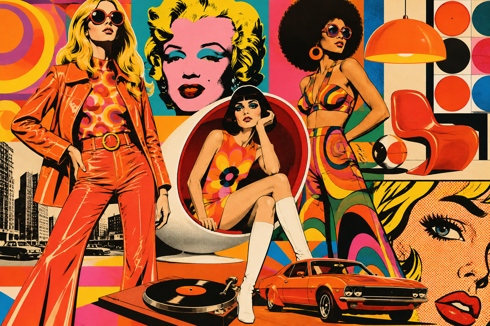
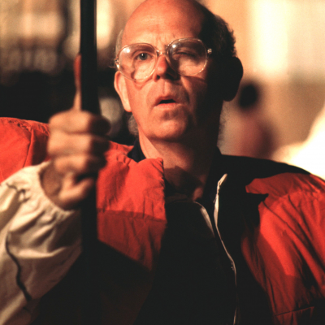

01 / ÍCONO
ANDY
ANDY
WARHOL
Convirtió la repetición y las celebridades en una pregunta sobre fama y consumo.
ARTE · COLOR · CULTURA POP
El arte que convirtió lo cotidiano en extraordinario.
EXPLORARSurge en Reino Unido y Estados Unidos. Los artistas miran la publicidad, el cine y los objetos de consumo.

Las historietas, las estrellas y los productos cotidianos pasan a ocupar el centro de las obras.

Su lenguaje visual se extiende por el diseño, la moda y la gráfica.

Sus colores, repeticiones y guiños a la cultura popular siguen apareciendo en todo lo que vemos.

El Pop Art tomó imágenes conocidas por todos y las transformó en arte: latas, cómics, celebridades y anuncios. Usó colores vibrantes, repetición e ironía para preguntarnos cómo consumimos imágenes.
¡EL ARTE SALIÓ A LA CALLE!
Convirtió la repetición y las celebridades en una pregunta sobre fama y consumo.

Trasladó la estética de la historieta al lienzo con puntos, globos y contornos gruesos.
Mezcló recortes de publicidad para retratar el deseo y la vida moderna.

Agrandó objetos comunes hasta convertirlos en esculturas sorprendentes.
Un pequeño universo de formas, color y cultura visual. Tocá cualquier pieza para verla más grande.
¿Tenés una idea, pregunta o comentario? ¡Escribime!